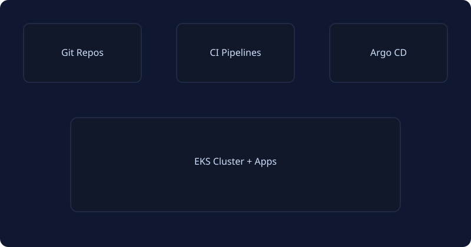

GitOps Platform — Primary Project
EKS • Argo CD • Helm • Terraform • Prometheus • SSO • Multi-Account AWS

Overview
Designed and delivered a production-grade GitOps platform for 20+ microservices across multiple environments. The platform standardized delivery using Helm charts, enforced policy-as-code, and provided full observability with SLOs.
Architecture
- Infrastructure: AWS Organizations, VPC, EKS, RDS
- IaC: Terraform + Terragrunt
- Delivery: Argo CD, Helm, progressive rollout
- Security: IAM roles for service accounts, secrets mgmt
- Observability: Prometheus, Alertmanager, Grafana, OTEL
Key Outcomes
- 70% faster lead time and 60% reduction in change failure rate.
- Zero-downtime deployments with blue/green and canary strategies.
- Automated guardrails reduced production incidents by 40%.
What I Built
- Terraform modules for EKS, networking, and managed services.
- Reusable Helm charts for apps, jobs, and platform add-ons.
- Argo CD app-of-apps pattern with environment overlays.
- Dashboards and alerts aligned to service SLOs.